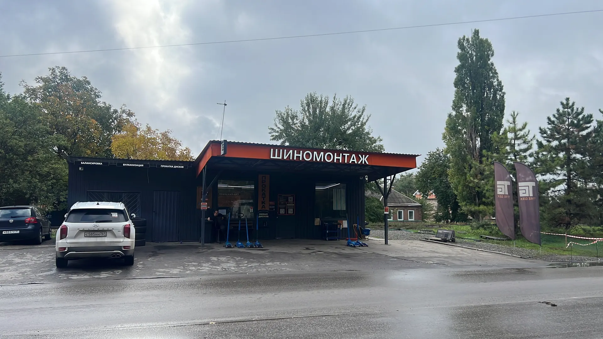
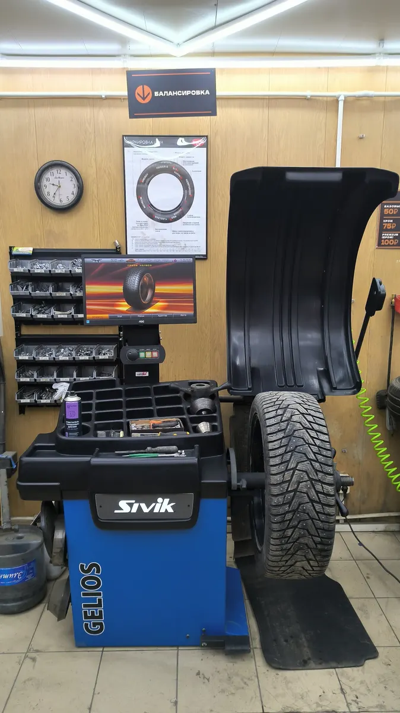
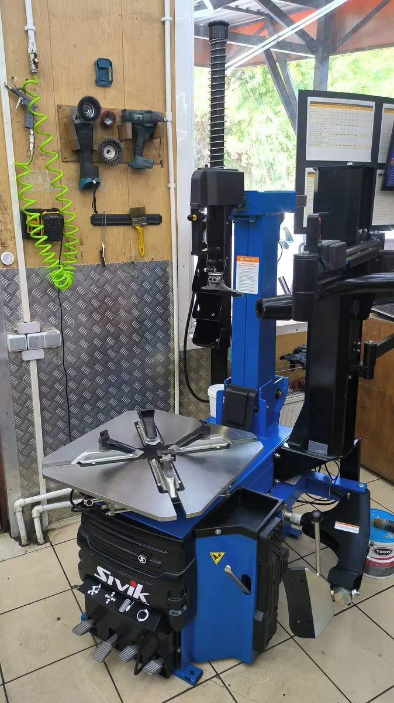
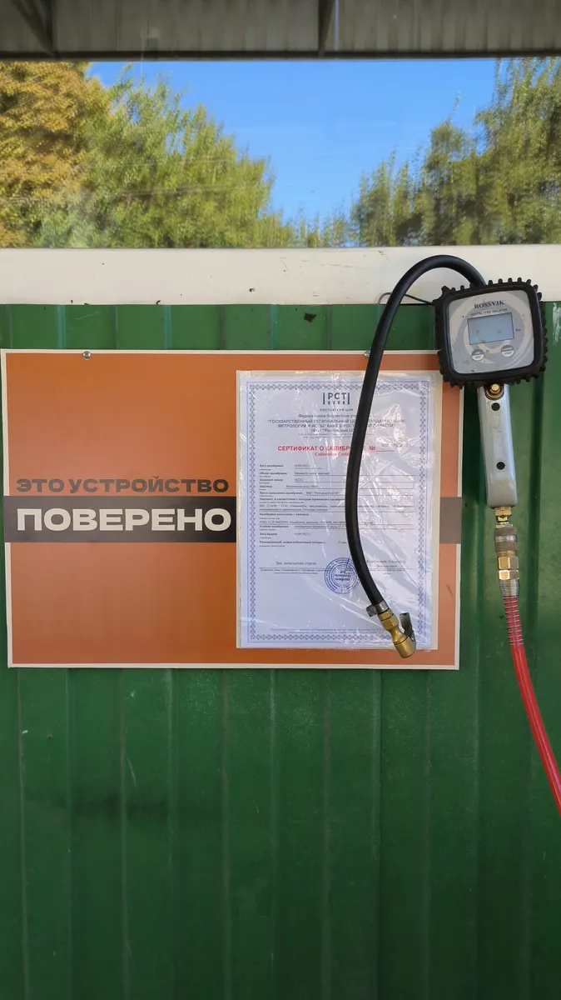

Шиномонтаж · Таганрог
Чистый шиномонтаж в Таганроге по записи
Записываетесь заранее, цену по размеру знаете до приезда. Мойка колёс, балансировка и протяжка динамометрическим ключом уже в комплексе.
- Работаем по записи – без очереди
- Цена по размеру колеса известна до приезда
- Балансировка и протяжка динамометрическим ключом в комплексе

Что входит в переобувку
Входит
- Технологическая мойка колеса
- Демонтаж и монтаж шины
- Чистка закраин и привалочной плоскости диска
- Балансировка колёс
- Протяжка болтов динамометрическим ключом
Отдельно, если нужно
- Ремонт боковых порезов вулканизацией
- Прокатка, правка и покраска дисков
- Мотошиномонтаж
- Сезонное хранение шин
Цена известна до приезда
Переобувка автомобиля – комплекс за комплект из 4 колёс. Цены с карточки на Яндекс Картах.
Переобувка автомобиля, комплект из 4 колёс
- 175/70 R132 540 ₽
- 175/65 R142 720 ₽
- 195/55 R152 320 ₽
- 205/55 R16 штамп3 020 ₽
- 215/65 R163 700 ₽
- 225/75 R164 460 ₽
- 185/75 R16Cкоммерческий транспорт5 980 ₽
- 215/55 R173 740 ₽
- 225/60 R174 160 ₽
- 285/60 R186 360 ₽
- 225/55 R194 760 ₽
- 255/45 R206 260 ₽
Остальные работы
- Ремонт боковых порезовгорячая вулканизацияуточнить
- Прокатка и правка дисковуточнить
- Покраска дисковуточнить
- Мотошиномонтажуточнить
- Сезонное хранение шинуточнить
В комплекс входит: технологическая мойка колеса, демонтаж и монтаж шины, чистка закраин и привалочной плоскости диска, балансировка, протяжка болтов динамометрическим ключом.
Как проходит
- 01
Запись на своё время
В WhatsApp, Telegram или по телефону.
- 02
Напомним заранее
Подтверждение записи и напоминание приходят в WhatsApp.
- 03
Приехали – сразу в работу
Работают несколько мастеров одновременно, без очереди.
- 04
Полный комплекс на стенде
Мойка колёс, монтаж, чистка закраин, балансировка, протяжка ключом с моментом.
- 05
Через 20–30 минут – готово
Оплата: наличные, карта, СБП, QR-код, перевод.



Что обещаем
Приезжаете к своему времени
Работаем по записи, поэтому вас берут сразу, а не через час.
Болты тянем по моменту
Динамометрическим ключом, а не «до талого»: колесо потом откручивается штатным ключом.
Бережём диски
Пластиковые проставки на станке, чистка закраин и привалочной плоскости.
Манометр поверен
Давление подкачки проверено прибором со свидетельством о поверке.
Отзывы с Яндекс.Карт
«Всё на высшем уровне! Записался через сервис дикиди, моментально пришло подтверждение моей записи. За час до назначенного воемени, пришло напоминание. Сам сервис по шиномонтажу на высшем уровне от демонтажа до монтажа все продумано до мелочей! Есть зона ожидания)) советую!»
Денис Н. · 4 ноября 2025
«Отличный шиномонтаж. Ребята очень аккуратно и круто все делают. Причем довольно быстро. Очень сильно порадовало, что делают чистку привалочной плоскости, а в конце протягивают болты динамометрическим ключом. Такое в городе вижу впервые 👍»
Антон Денисов · 26 октября 2025
«Впервые в жизни увидел: 1. Чистый ШИНОМОНТАЖ! 2. Абсолютно правильную культуру рабочих мест! Мастер - огромный молодец, все сделано технологически правильно, а еще - быстро! Огромное спасибо! Замечательный шиномонтаж!»
Константин К · 8 февраля
Отзывы с карточки на Яндекс.Картах, без правок.
Частые вопросы
Можно приехать без записи?
Работаем по записи: так вы приезжаете к своему времени и не стоите в очереди. Запишитесь в WhatsApp, Telegram или по телефону – окна бывают и на сегодня, и на завтра.
Сколько занимает переобувка?
Обычно 20–30 минут на комплект: работают несколько мастеров одновременно.
Балансировка входит в цену?
Да. В комплекс уже входят мойка колеса, чистка диска, балансировка и протяжка болтов динамометрическим ключом.
Делаете ремонт боковых порезов?
Да, горячей вулканизацией. Гнутые диски прокатываем и правим. Стоимость уточните при записи.
Берёте большие колёса и мотоциклы?
Да: колёса до 24 дюймов, есть головки под секретки, делаем мотошиномонтаж.
Как оплатить?
Наличные, карта, СБП, QR-код или перевод.
Запишитесь к своему времени
- Адрес
- Транспортная улица, 34/1, Таганрог
- Часы
- Ежедневно 09:00–19:00, перерыв 13:00–14:00
- Телефон
- +7 (961) 270-42-06